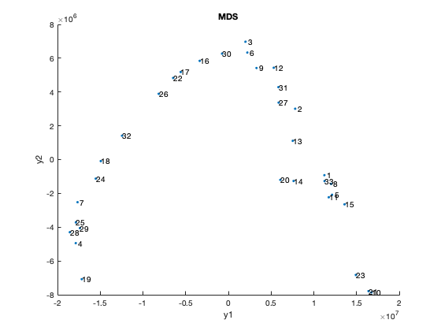
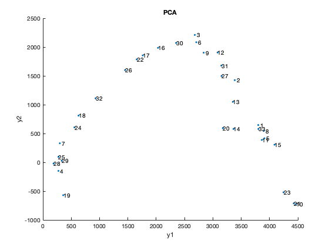
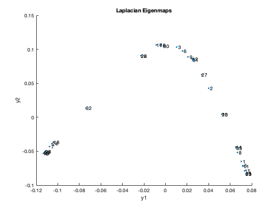
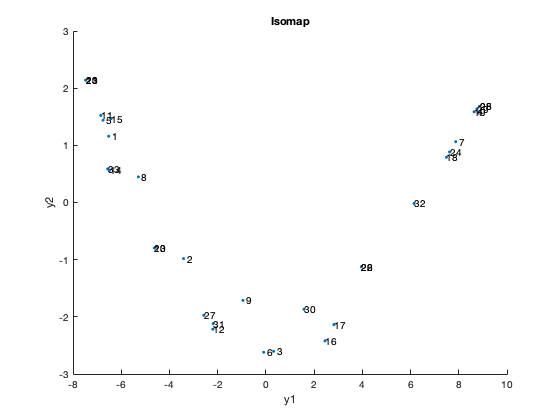
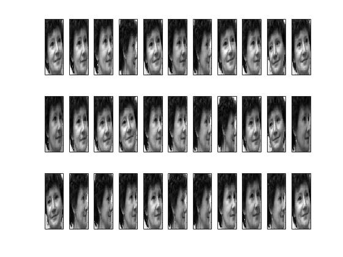

X = csvread('faces.csv');
n = size(X,1);
disp("1a)")
Z = pdist(X, 'squaredeuclidean');
D = squareform(Z);
q=2;
Y = calculate_mds(D, q);
figure(1);
scatter(Y(:,1), Y(:,2), '.');
a = [1:n]'; b = num2str(a); c = cellstr(b);
dx = 0.1; dy = 0.1;
text(Y(:,1)+dx, Y(:,2)+dy, c);
title('MDS')
xlabel('y1');
ylabel('y2');
snapnow;
coeff = pca(X);
U = coeff(:,1:q);
Y = (X*U);
figure(2);
scatter(-Y(:,1), -Y(:,2), '.');
a = [1:n]'; b = num2str(a); c = cellstr(b);
dx = 0.1; dy = 0.1;
text(-Y(:,1)+dx, -Y(:,2)+dy, c);
title('PCA')
xlabel('y1');
ylabel('y2');
snapnow;
fprintf("The results of MDS with Sqaured Euclidan Distances and PCA are similar.\n");
disp("1b)")
k = 5;
idx = knnsearch(X, X, 'K', k+1);
idx = idx(:,2:end);
W = zeros(n);
for i=1:n
W(i, idx(i,:)) = 1;
W(idx(i,:),i) = 1;
end
D=diag(sum(W,2));
L = D - W;
[U,lambda] = eigs(L,D, q+1, 'smallestabs');
Y = U(:,2:end);
figure(3);
scatter(Y(:,1), Y(:,2), '.');
a = [1:n]'; b = num2str(a); c = cellstr(b);
dx = 0.1; dy = 0.1;
text(Y(:,1), Y(:,2), c);
title('Laplacian Eigenmaps')
xlabel('y1');
ylabel('y2');
snapnow;
disp("1c)")
D = distances(graph(W));
Y = calculate_mds(D, q);
figure(4);
scatter(Y(:,1), Y(:,2), '.');
a = [1:n]'; b = num2str(a); c = cellstr(b);
text(Y(:,1), Y(:,2), c);
title('Isomap')
xlabel('y1');
ylabel('y2');
snapnow;
disp("1d)")
figure(5)
set(gcf, 'PaperUnits','inches');
set(gcf, 'PaperSize',[10, 10]);
colormap(gray);
for i=1:n
subplot(3, 11, i);
imagesc(reshape(X(i,:),112,92));
set(gca, 'XTickLabel', []);
set(gca, 'YTickLabel', []);
end
snapnow;
fprintf("One key thing to note is that, each image is captured from different angle(head is rotated in images). Also in some images the head of the woman \n is tilted, however this is not very clear. These are the two properties could be captured in the dimensions. \n")
fprintf("Looks like Laplacian Eigenmaps or Isomap is doing better than PCA and MDS. Group of the images which are very similar, show up close to each other \n in Isomap and Laplacian Eigenmaps - this could to be attributed to the fact that they perform non-linear dimensionality reduction. \n")
function Y = calculate_mds(D, q)
n = size(D,1);
temp = eye(n) - (1/n)*ones(n);
B = (-1/2) * temp * D * temp;
[V, D] = eig(B);
[D_sorted, D_order] = sort(diag(D), 'descend');
V=V(:, D_order);
U=V(:, 1:q);
lambda = diag(D_sorted(1:q));
Y = U*lambda;
end
1a)
 
The results of MDS with Sqaured Euclidan Distances and PCA are similar.
1b)

1c)

1d)

One key thing to note is that, each image is captured from different angle(head is rotated in images). Also in some images the head of the woman
is tilted, however this is not very clear. These are the two properties could be captured in the dimensions.
Looks like Laplacian Eigenmaps or Isomap is doing better than PCA and MDS. Group of the images which are very similar, show up close to each other
in Isomap and Laplacian Eigenmaps - this could to be attributed to the fact that they perform non-linear dimensionality reduction.